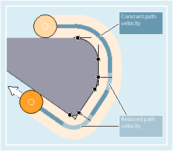
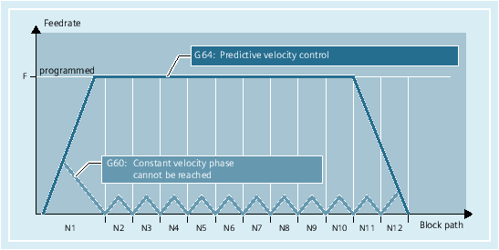
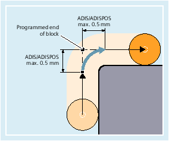

In continuous-path mode, the tool travels across tangential contour transitions with as constant a path velocity as possible (no deceleration at block boundaries). LookAhead deceleration is applied before corners and blocks with exact stop.
Corners are also traversed at a constant velocity. In order to minimize the contour error, the velocity is reduced according to an acceleration limit and an overload factor.
| Note |
The extent of smoothing the contour transitions depends on the feedrate and the overload factor. The overload factor can be set in MD32310 $MA_MAX_ACCEL_OVL_FACTOR. In the case of extended continuous-path mode, additionally from the number of IPO cycles (MD20493 $MC_G64_NUM_IPO) in which the overload factor is effective. Setting MD20490 $MC_IGNORE_OVL_FACTOR_FOR_ADIS means that block transitions will always be rounded irrespective of the set overload factor. |
The following points should be noted in order to prevent an undesired stop in path motion (relief cutting):
Auxiliary functions, which are enabled after the end of the motion or before the next motion, interrupt the continuous-path mode (exception: fast auxiliary functions).
Positioning axes always traverse according to the exact stop principle, positioning window fine (as for G601). If an NC block has to wait for positioning axes, continuous-path mode is interrupted on the path axes.
However, intermediate blocks containing only comments, calculation blocks or subprogram calls do not affect continuous-path mode.
| Note |
If FGROUP does not contain all the path axes, there is often a step change in the velocity at block transitions for those axes excluded from FGROUP; the control limits this change in velocity to the permissible values set in MD32300 $MA_MAX_AX_ACCEL and MD32310 $MA_MAX_ACCEL_OVL_FACTOR. This braking operation can be avoided through the application of a smoothing function, which smooths the specific positional interrelationship between the path axes. |
In continuous-path mode, the control automatically determines the velocity control for several NC blocks in advance. This enables acceleration and deceleration across multiple blocks with almost tangential transitions.
Look Ahead is particularly suitable for the machining of motion sequences comprising short traverse paths with high path feedrates.
The number of NC blocks included in the Look Ahead calculation can be defined in machine data.
With G641, the control inserts transition elements at contour transitions. The smoothing clearance ADIS (or ADISPOS for G0) specifies the maximum extent to which corners can be smooth (rounded). Within this smoothing clearance, the control can ignore the configured path and replace it with a dynamically optimized path.
Disadvantage: Only one ADIS value is available for all axes.
The effect of G641 is similar to RNDM; however, it is not restricted to the axes of the working plane.
Just the same as G64, G641 works with lookahead predictive velocity control. Smoothing blocks with a high degree of curvature are approached with a reduced velocity.
Example:
| Program code | Comment |
|---|---|
| N10 G641 ADIS=0.5 G1 X... Y... | ; The smoothing block must begin no more than 0.5 mm before the programmed end of the block and must finish 0.5 mm after the end of the block. This setting remains modal. |
| Note |
Smoothing cannot and should not replace the functions for defined smoothing (RND, RNDM, ASPLINE, BSPLINE, CSPLINE). |
With G642, smoothing does not take place within a defined ADIS range; instead, the axial tolerances defined with MD33100 $MA_COMPRESS_POS_TOL are applied. The smoothing clearance is determined based on the shortest smoothing path of all axes. This value is taken into account when generating a smoothing block.
The maximum deviations from the precise contour in the case of smoothing with G643 are defined for each axis using machine data MD33100 $MA_COMPRESS_POS_TOL.
G643 is not used to generate a separate smoothing block, but axis-specific block-internal smoothing motion is inserted. In the case of G643, the smoothing clearance of each axis can be different.
MD20480 $MC_SMOOTHING_MODE can be used to configure smoothing with G642 and G643 so that instead of axis-specific tolerances, a contour tolerance and an orientation tolerance can be applied.
The contour tolerance and orientation tolerance are set in the channel-specific setting data:
SD42465 $SC_SMOOTH_CONTUR_TOL (maximum contour deviation)
SD42466 $SC_SMOOTH_ORI_TOL (maximum angular deviation of the tool orientation)
The setting data can be programmed in the NC program; this means that it can be specified differently for each block transition. Very different specifications for the contour tolerance and the tolerance of the tool orientation can only take effect with G643.
| Note |
Expansion to include contour and orientation tolerance is only supported on systems featuring the "Polynomial interpolation" option. |
| Note |
An orientation transformation must be active for smoothing within the orientation tolerance. |
Smoothing with maximum possible dynamic response is configured in the thousands place with MD20480 $MC_SMOOTHING_MODE.
Value | Meaning |
|---|---|
0 | Specification of maximum axial deviations with: MD33100 $MA_COMPRESS_POS_TOL |
1 | Specification of maximum smoothing path by programming: ADIS=... or ADISPOS=... |
2 | Specification of the maximum possible frequencies of each axis occurring in the smoothing range with: MD32440 $MA_LOOKAH_FREQUENCY The smoothing range is defined such that no frequencies in excess of the specified maximum can occur during smoothing motion. |
3 | When smoothing with G644, neither the tolerance nor the smoothing clearance is monitored. Each axis traverses around a corner with the maximum possible dynamic response. |
With G645, the smoothing motion is defined so that the acceleration of all axes involved remains smooth (no jumps) and the parameterized maximum deviations from the original contour (MD33120 $MA_PATH_TRANS_POS_TOL) are not exceeded.
In the case of angular non-tangential block transitions, the smoothing behavior is the same as with G642.
An intermediate smoothing block is not inserted in the following cases:
The axis stops between the two blocks.
This occurs when:
The following block contains an auxiliary function output before the motion.
The following block does not contain a path motion.
An axis is traversed for the first time as a path axis for the following block when it was previously a positioning axis.
An axis is traversed for the first time as a positioning axis for the following block when it was previously a path axis.
The previous block traverses geometry axes and the following block does not.
The following block traverses geometry axes and the previous block does not.
Before tapping, the following block uses G33 as preparatory function and the previous block does not.
A change is made between BRISK and SOFT.
Axes involved in the transformation are not completely assigned to the path motion (e.g. for oscillation, positioning axes).
The smoothing block would slow down part program execution.
This occurs:
Between very short blocks.
Since each block requires at least one interpolator clock cycle, the added intermediate block would double the machining time.
If a block transition G64 (continuous-path mode without smoothing) can be traversed without a reduction in velocity.
Smoothing would increase the machining time. This means that the value of the permitted overload factor (MD32310 $MA_MAX_ACCEL_OVL_FACTOR) affects whether a block transition is rounded or not. The overload factor is only taken into account for smoothing with G641 / G642. The overload factor has no effect in the case of smoothing with G643 (this behavior can also be set for G641 and G642 by setting MD20490 $MC_IGNORE_OVL_FACTOR_FOR_ADIS to TRUE).
Smoothing is not parameterized.
This occurs when:
for G641 in G0 blocks, ADISPOS=0 (preassignment!).
for G641 in non G0 blocks, ADISPOS=0 (preassignment!).
for G641, for transition from G0 to non-G0 or non-G0 to G0, the lower of the values from ADISPOS and ADIS applies.
for G642/G643, all axis-specific tolerances are zero.
The block does not contain traversing motion (zero block).
This occurs when:
Synchronized actions are active.
Normally, the Interpreter eliminates zero blocks. However, if synchronized actions are active, this zero block is included and also executed. In so doing, an exact stop is initiated corresponding to the active programming. This allows the synchronized action to also switch.
Zero blocks are generated by program jumps.
Also for rapid traverse motion, one of the listed functions G60/G9 or G64 - respectively G641 - G645 - must be specified. Otherwise, the default in the machine data is used.